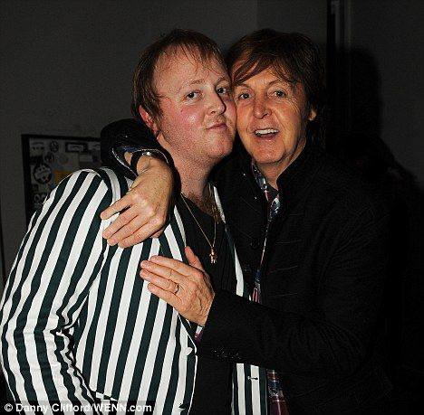

Paul and HIs Guitar
His father influencing his early musical interests, Paul's family supported his musical ambitions, and he began playing guitar and writing songs from a young age.
.jpg)
John LennonJohn Lennon was born on October 9, 1940, in Liverpool, England, to Alfred Lennon and Julia Stanley. |
|
ChildhoodHis parents separated when he was young, and John was raised by his Aunt Mimi (Mary Elizabeth Smith), along with her husband George Smith. Mimi provided stability in John's life. |
John and His Motherhis relationship with his mother, Julia, was significant despite their physical distance. |
Encouraging MotherJulia encouraged John's interest in music and taught him how to play the banjo and the piano |
FateTragically, Julia died in a car accident when John was just 17 years old. |
First WifeJohn Lennon's first wife Cynthia Powell. They got married on August 23, 1962, when Cynthia was pregnant with their son, Julian Lennon. Their marriage faced challenges. They eventually divorced in 1968. |
Second WifeJohn went on to marry Yoko Ono in 1969. Yoko Ono remained John's wife until his tragic death in 1980. |
Julian LennonJulian Lennon: Son of John Lennon and Cynthia Lennon. Born on April 8, 1963. |
Sean LennonSean Lennon: Son of John Lennon and Yoko Ono. Born on October 9, 1975. |
Paul McCartneyPaul McCartney was born on June 18, 1942, in Liverpool, England, to James McCartney and Mary Patricia McCartney (née Mohin). |
|
ChildhoodHis father, James, was a cotton salesman and a jazz musician who played trumpet and piano. His mother, Mary, worked as a nurse. Paul also had a brother named Michael. |
Paul and HIs GuitarHis father influencing his early musical interests, Paul's family supported his musical ambitions, and he began playing guitar and writing songs from a young age. |
Parentshis mother, Mary Patricia (Mohin), was a medical nurse and midwife. His father, James "Jim" McCartney, was a cotton salesman and a pianist leading the Jim Mac's Jazz Band in Liverpool. |
MikePeter Michael McCartney (born 7 January 1944), also known by the stage name Mike McGear, is an English performing artist and photographer who was a member of the groups the Scaffold and Grimms |
First WifeThey were married on 12 March 1969. They had three children together and remained married until her death from breast cancer in 1998. |
Second WifeThey were married at Castle Leslie in Glaslough, Ireland. They had one child, Beatrice, in 2003 |
Third WifeCurrently, Paul McCartney is married to Nancy Shevell, whom he wed in 2011. |

James McCartney(left)James McCartney: Son of Paul McCartney and Linda McCartney. Born on September 12, 1977 |
Stella McCartneyStella McCartney: Daughter of Paul McCartney and Linda McCartney. Born on September 13, 1971 |
Mary McCartneyMary McCartney: Daughter of Paul McCartney and Linda McCartney. Born on August 28, 1969. |
George and His GuitarHe was inspired to pursue music by listening to artists like Elvis Presley and Lonnie Donegan. Despite his family's modest means, George's parents supported his musical aspirations, and he eventually became one of the most influential guitarists in rock history. |
BrothersPeter was George's older brother, born in 1939. Harry was George's younger brother, born in 1949 |

WifeGeorge Harrison's first wife was Pattie Boyd. They got married on January 21, 1966. George and Pattie's marriage faced challenges, including George's infidelity and his spiritual journey, which led to their eventual divorce. |
Dhani Harrison
|
Ringo and His DrumHis stepfather who bought him his first drum kit, sparking his lifelong passion for music. |
StepfatherHarry Graves. Harry Graves married Ringo's mother, Elsie Starkey, in 1953, when Ringo was already a teenager. Graves became an important figure in Ringo's life, providing some stability and support during Ringo's formative years. |
WifeRingo Starr's wife is Barbara Bach. They got married on April 27, 1981. Barbara Bach is an actress known for her roles in films such as "The Spy Who Loved Me" and "Force 10 from Navarone." She has been Ringo's partner for several decades, and they continue to enjoy a happy marriage together. |
Zak Starr
|
 |
AllAboutTheBeatles@gmail.com |
 |
@AllAboutTheBeatles |
 |
@AllAboutTheBeatles |